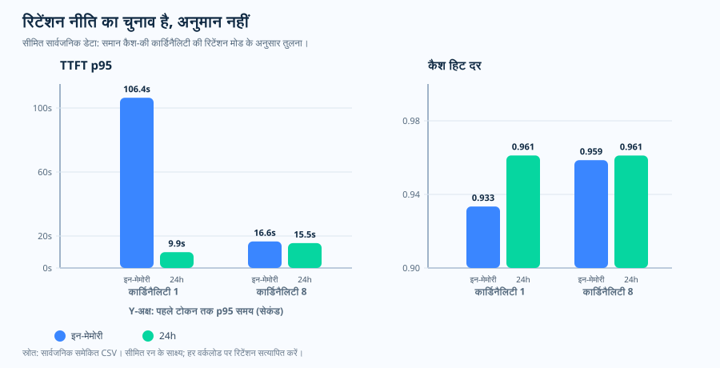

संचालन लेख, प्रॉम्प्ट कैश रिटेंशन
रिटेंशन मान्यता नहीं, अनुरोध की नीति है
समर्थित मॉडल पात्र प्रीफ़िक्स के लिए कैशिंग स्वतः सक्षम कर सकते हैं, लेकिन इससे हर अनुरोध पर वास्तविक कैश हिट की गारंटी नहीं मिलती। इसलिए प्रॉम्प्ट
कैशिंग अक्सर अपने-आप चलती हुई लगती है। तब सहज रूप से उसी पर भरोसा हो जाता है: कार्यभार किसी निष्क्रिय अंतर के बाद, शिफ़्ट सीमा पार करके, बैच विराम के बाद, या
बाद की ग्राहक संवाद में वही साझा प्रीफ़िक्स फिर इस्तेमाल करता है, और अनुरोध मुख्य भाग
में बस prompt_cache_retention नहीं भेजा जाता, यह मानकर कि वह अवधि
अभी भी बनी होगी। लेकिन “कैशिंग सक्षम है”, “वास्तविक कैश हिट हुई” और “संचालन जितनी देर मानकर चल रहा है उतनी देर कैश संरक्षित रहा”—ये तीन अलग बातें हैं। अगर अनुरोध
संरक्षण नहीं माँगती, तो संचालन शायद ऐसी कैश अवधि पर निर्भर हो जो उसने
कभी माँगी ही नहीं। इसलिए असली सवाल “कैशिंग सक्षम है?” नहीं, बल्कि "जिस पुनः उपयोग अवधि
पर यह कार्यभार निर्भर है, क्या अनुरोध ने उसे साफ़ तौर पर माँगा है?" है।
in_memory
डिफ़ॉल्ट बताता है जो कुछ ही मिनटों में साफ़ हो सकता है, और एक स्पष्ट
24h अवधि भी। यह एक-पृष्ठ सार एक ही बात पर ज़ोर देता है: अगर बाद का
पुनः उपयोग अहम है, तो संरक्षण को स्पष्ट रखें: और साथ ही सीमा भी साफ़ करता है।
संरक्षण मोड आधिकारिक विनिर्देश हैं, जबकि उनके साथ दिखाया गया प्रथम-टोकन विलंब
स्वरूप PAYG पर मापा गया पहचान-रहित सार्वजनिक समेकित आँकड़ा है, जिसे यहाँ सिर्फ़
वर्णनात्मक रूप में रखा गया है।
कैश रिटेंशन का एक-पृष्ठ सार SVG खोलें।

मान लेने के बजाय अवधि क्यों सेट करें
"डिफ़ॉल्ट काफ़ी है" वाली सहज प्रतिक्रिया यह मान लेती है कि कैश अवधि उतनी देर
बनी रहेगी, जितना अंतर कार्यभार दो पुनः उपयोग के बीच छोड़ता है। इसे मान लेने से पहले दो
बातों को साथ रखकर देखना चाहिए। पहली बात Microsoft Learn की दस्तावेज़ीकृत व्यवहार
है: संरक्षण नीतियाँ दो हैं: in_memory और 24h।
इन-मेमोरी प्रविष्टियाँ आमतौर पर 5–10 मिनट की निष्क्रियता के भीतर साफ़ हो जाती हैं और
अंतिम उपयोग के 1 घंटे के भीतर हमेशा हटा दी जाती हैं, जबकि विस्तारित संरक्षण
कैश-योग्य प्रीफ़िक्स को अधिकतम 24 घंटे तक रूट-योग्य रख सकती है। gpt-5.4
और उससे पुराने मॉडलों में मान छोड़ने का मतलब in_memory है, और
प्रॉम्प्ट कैश की मूल्य-निर्धारण दोनों नीतियों के लिए समान है। दूसरी बात इस रिपॉज़िटरी के
स्रोत रन से लिया गया एक सीमित पहचान-रहित सार्वजनिक समेकित आँकड़ा है, जिसे संरक्षण
मोड के हिसाब से समूह किया गया है और जो वर्णनात्मक रूप से दिखाता है कि
in_memory और 24h में प्रथम-टोकन विलंब और कैश हिट
अनुपात ने व्यवहार में कैसे बदलाव दिखाए।
असली बात इन दोनों को साथ पढ़ने में है। सिर्फ़ हिट अनुपात देखकर बात आश्वस्त करने
वाली लग सकती है, जबकि संरक्षण चुनाव का असर कहीं और सामने आता है। मापे गए इस
हिस्से में दोनों मोड का हिट अनुपात ऊँचा रहा (क़रीब 0.93–0.96), इसलिए अगर आप
सिर्फ़ वही देखें तो लगेगा कि संरक्षण मोड से ज़्यादा फ़र्क़ नहीं पड़ा। लेकिन
प्रथम-टोकन विलंब टेल कहानी का दूसरा हिस्सा दिखाती है: कार्डिनैलिटी 1 पर
in_memory शृंखला क़रीब 106,000 ms p95 पर थी, जबकि
24h शृंखला क़रीब 9,900 ms पर। यानी यहाँ संरक्षण चुनाव हिट अनुपात
में नहीं, विलंब टेल में दिखी। इसी वजह से संरक्षण को कैशित-टोकन हिस्सा के
साथ विलंब रखकर पढ़ना चाहिए: यह सिर्फ़ प्रदर्शन सेटिंग नहीं, अनुरोध नीति
और शासन चुनाव भी है। दो संरक्षण मोड, उनकी अवधि,
in_memory डिफ़ॉल्ट, एक-सी मूल्य-निर्धारण, और विस्तारित संरक्षण की
क्षेत्र के भीतर शर्त Microsoft Learn दस्तावेज़ीकृत व्यवहार के रूप में देता है। विलंब और
हिट अनुपात को साथ रखकर दिखाया गया यह सार्वजनिक साक्ष्य इस रिपॉज़िटरी का स्रोत रन
साक्ष्य है, कोई सार्वभौमिक विलंब वक्र नहीं। नीचे के चार्ट वही युग्मन साफ़ करते
हैं।
सवाल
जहाँ संचालन बाद में कैश पुनः उपयोग की उम्मीद करता है, क्या अनुरोध सचमुच वही अवधि माँग रही है?
साक्ष्य
Microsoft Learn संरक्षण मोड को परिभाषित करता है, और यह रिपॉज़िटरी सीमित सार्वजनिक विलंब और हिट-अनुपात साक्ष्य जोड़ती है।
फैसला
संरक्षण को स्पष्ट रखें, प्रीफ़िक्स स्थिर रखें, और विलंब को कैशित-टोकन हिस्सा के साथ पढ़ें।
आधिकारिक व्यवहार, दो संरक्षण मोड
कैशिंग सक्षम होना, वास्तविक हिट या स्पष्ट संरक्षण के बराबर नहीं
Microsoft Learn दो प्रॉम्प्ट कैश संरक्षण नीतियाँ बताता है: in_memory और 24h। कैशिंग की पात्रता या सक्रियण अपने-आप वास्तविक कैश हिट सिद्ध नहीं करता। इन-मेमोरी कैश प्रविष्टियाँ आमतौर पर
5–10 मिनट की निष्क्रियता के भीतर साफ़ हो जाती हैं और अंतिम उपयोग के 1 घंटे के भीतर
हमेशा हटा दी जाती हैं। विस्तारित संरक्षण कैश-योग्य प्रीफ़िक्स को अधिकतम 24 घंटे तक
सक्रिय रख सकती है।
डिफ़ॉल्ट अवधि छोटी हो सकती है
gpt-5.4 और उससे पुराने मॉडलों में संरक्षण छोड़ने का मतलब in_memory है।
लंबा पुनः उपयोग को स्पष्ट रखें
अगर बाद का पुनः उपयोग अपेक्षित है, तो जहाँ समर्थन हो वहाँ prompt_cache_retention को 24h पर सेट करें।
मूल्य यहाँ फ़र्क़ नहीं बनाती
Microsoft Learn के अनुसार प्रॉम्प्ट कैश मूल्य-निर्धारण दोनों संरक्षण नीतियों के लिए एक ही है।
अवलोकित साक्ष्य, मापा गया सार्वजनिक खंड
संरक्षण का असर विलंब में साफ़ दिखा
in_memory और 24h की
तुलना करता है।

in_memory और 24h, हर एक N = 960 रिकॉर्ड।
यह दो-शृंखला पंक्ति चार्ट है, आवृत्ति हिस्टोग्राम नहीं। इसे कैसे
पढ़ें: कार्डिनैलिटी 1 पर in_memory शृंखला क़रीब
106,000 ms p95 पर थी और 24h शृंखला क़रीब 9,900 ms पर। इस कॉन्फ़िगरेशन में संरक्षण मोड के बीच विलंब टेल का बड़ा वर्णनात्मक अंतर दिखा; 8 बकेट वाले सेल में दोनों शृंखलाएँ पास थीं। एकल रन कारण सिद्ध नहीं करता।
साक्ष्य-सीमा: PAYG gpt-5.2 पर एक सीमित पहचान-रहित सार्वजनिक
समेकित आँकड़े (PTU नहीं)। स्रोत रन का साक्ष्य, सार्वभौमिक विलंब नियम नहीं।
स्रोत:
results/cache-key-bucketing/ttft_p95_vs_cardinality.csv
(स्रोत CSV)।

in_memory और 24h
शृंखला, हर एक N = 960। इसे कैसे पढ़ें: मापे गए इस
हिस्से में दोनों शृंखलाएँ ऊँची रहीं (क़रीब 0.93–0.96), और कार्डिनैलिटी 1 पर
24h शृंखला थोड़ी ऊँची थी। यहाँ संरक्षण का बड़ा फ़र्क़ हिट अनुपात
में नहीं, ऊपर वाले विलंब खंड में दिखा: इसलिए संरक्षण को कैशित-टोकन
हिस्सा के साथ विलंब रखकर पढ़ना चाहिए। साक्ष्य-सीमा: PAYG gpt-5.2
पर वही सीमित पहचान-रहित सार्वजनिक समेकित आँकड़े (PTU नहीं)। यह वर्णनात्मक है,
सार्वभौमिक कैश-हिट नियम नहीं। स्रोत:
results/cache-key-bucketing/cache_hit_ratio_vs_cardinality.csv
(स्रोत CSV)।

| संरक्षण | कार्डिनैलिटी | हिट अनुपात | TTFT p95 | स्थिर रिकॉर्ड |
|---|---|---|---|---|
| इन-मेमोरी | 1 | 0.9334 | 106,389.96 ms | 388 |
| 24h | 1 | 0.9612 | 9,899.74 ms | 390 |
| इन-मेमोरी | 8 | 0.9586 | 16,623.66 ms | 389 |
| 24h | 8 | 0.9612 | 15,549.08 ms | 389 |
यह क्या दिखाता है, और क्या नहीं
मापे गए इस सार्वजनिक हिस्से में कार्डिनैलिटी 1 पर संरक्षण मोड के बीच प्रथम-टोकन विलंब का बड़ा वर्णनात्मक अंतर दिखा। यह स्रोत रन का साक्ष्य है; यह कारणात्मक या सार्वभौमिक नियम नहीं। टिकाऊ सबक़ इससे भी सरल है: संरक्षण मोड, हिट अनुपात, और विलंब को साथ पढ़ें।
संचालन नीति, अस्पष्टता हो तो सुरक्षित रूप से अस्वीकार
अगर संरक्षण अहम है, तो चुनाव साफ़ दिखनी चाहिए
इस सार्वजनिक रिपॉज़िटरी में एक छोटा संरक्षण-नीति सहायक है, जो उन मॉडलों पर
छोड़ा गया मान स्वीकार नहीं करता जिनका दस्तावेज़ीकृत डिफ़ॉल्ट
in_memory है। यह सख़्त लग सकता है, लेकिन यह एक आम विफलता मोड
रोकता है: डिज़ाइन लंबी कैश अवधि मानकर चलता है, जबकि अनुरोध मुख्य भाग चुपचाप
छोटा डिफ़ॉल्ट ले लेती है।
अच्छा
जब कार्यभार बाद के पुनः उपयोग पर निर्भर हो, तब prompt_cache_retention="24h"।
यह भी अच्छा
जब कार्यभार को सिर्फ़ छोटा पुनः उपयोग चाहिए और यह बात स्पष्ट हो, तब prompt_cache_retention="in_memory"।
जोखिम भरा
जब संचालन रनबुक लंबी अवधि मानकर चलता हो, फिर भी मान छोड़ देना।
गवर्नेंस टिप्पणी, संरक्षण सिर्फ़ विलंब की बात नहीं
लंबे संरक्षण के लिए शासन जाँच भी ज़रूरी है
Microsoft Learn के अनुसार इन-मेमोरी प्रॉम्प्ट कैशिंग सभी डेटा-निवास क्षेत्र के साथ संगत है। विस्तारित संरक्षण के लिए कैशित डेटा क्षेत्र के भीतर तभी रहता है जब मोड Regional Standard या Regional Provisioned हो। इसलिए संरक्षण सिर्फ़ प्रदर्शन निर्णय नहीं, शासन निर्णय भी है।
इसलिए लंबा संरक्षण पर भरोसा करने से पहले यह पक्का करें कि सेवा मोड कैशित डेटा को क्षेत्र के भीतर रखता है। इस चुनाव को डिफ़ॉल्ट पर न छोड़ें।
स्रोत और साक्ष्य सीमा
स्तर 1: सेवा अनुबंध (Microsoft Learn)। दो संरक्षण
नीतियों, इन-मेमोरी साफ़ और हटाना अवधियाँ, 24 घंटे की विस्तारित ऊपरी सीमा,
gpt-5.4 और उससे पुराने मॉडलों का in_memory डिफ़ॉल्ट,
दोनों नीतियों में एक-सी मूल्य-निर्धारण, और डेटा निवास व्यवहार यहाँ दस्तावेज़ीकृत
हैं।
- [1] Azure OpenAI के साथ प्रॉम्प्ट कैशिंग: इसमें
in_memoryऔर24hसंरक्षण नीतियाँ, 5–10 मिनट की निष्क्रियता के भीतर इन-मेमोरी साफ़ होना और अंतिम उपयोग के 1 घंटे के भीतर हटना, 24 घंटे की विस्तारित ऊपरी सीमा,gpt-5.4और उससे पुराने मॉडलों के लिएin_memoryडिफ़ॉल्ट, दोनों नीतियों में एक-सी प्रॉम्प्ट कैश मूल्य-निर्धारण, और यह डेटा-निवास नियम दस्तावेज़ीकृत है कि विस्तारित संरक्षण कैशित डेटा को क्षेत्र में तभी रखता है जब मोड Regional Standard या Regional Provisioned हो। स्रोत: Microsoft Learn दस्तावेज़ (2026-06-04 को देखा गया), अभिलेख।
स्तर 2: संचालनगत निष्कर्ष (यह रिपॉज़िटरी)।
in_memory डिफ़ॉल्ट वाले मॉडलों पर छोड़ा गया मान को सुरक्षित रूप से अस्वीकार करने
वाला संरक्षण-नीति सहायक, और सीमित सार्वजनिक हिट-अनुपात व प्रथम-टोकन विलंब
साक्ष्य, Learn के विनिर्देश नहीं बल्कि इस रिपॉज़िटरी का संचालनगत निष्कर्ष
और स्रोत रन के साक्ष्य हैं।
- [2] यह रिपॉज़िटरी,
docs/12-prompt-cache-key-policy.md: प्रॉम्प्ट कैश-कुंजी और संरक्षण रनबुक। §4 दस्तावेज़ीकृत प्रति-मॉडल डिफ़ॉल्ट सेin_memoryडिफ़ॉल्ट तालिका निकालता है औरprompt_cache_retentionको स्पष्ट रखने की सलाह देता है। स्रोत। - [3] यह रिपॉज़िटरी,
batch-runner/batch_runner/cache/retention_policy.py:ensure_explicitसहायक, जो दस्तावेज़ीकृत डिफ़ॉल्टin_memoryवाले मॉडलों पर छोड़ा गया मान आने पर त्रुटि उठाता है। यह Learn विनिर्देश नहीं, संचालनगत निष्कर्ष है। स्रोत। - [4] यह रिपॉज़िटरी,
results/cache-key-bucketing/cache_hit_ratio_vs_cardinality.csv: संरक्षण हिट अनुपात और प्रथम-टोकन विलंब तालिका के पीछे का सीमित सार्वजनिक समेकित आँकड़े। यह सार्वभौमिक विलंब नियम नहीं, स्रोत रन का साक्ष्य है। स्रोत।
यह विषय क्या साबित करता है, और क्या नहीं। यह उस अभिगमन तिथि पर
Microsoft Learn के बताए प्रॉम्प्ट कैश संरक्षण अनुबंध को दर्ज करता है: in_memory और 24h नीतियों, इन-मेमोरी कैश साफ़ होने और हटने की
अवधियाँ, 24 घंटे की विस्तारित ऊपरी सीमा, gpt-5.4 और उससे पुराने
मॉडलों का in_memory डिफ़ॉल्ट, दोनों नीतियों में एक-सी मूल्य-निर्धारण, और
विस्तारित संरक्षण की क्षेत्र के भीतर निवास परिस्थिति: साथ ही यह रिपॉज़िटरी नियम
भी: prompt_cache_retention को स्पष्ट रखें, और
in_memory-डिफ़ॉल्ट मॉडल पर मान छूट जाए तो सुरक्षित रूप से अस्वीकार करें। एक
सार्वजनिक हिस्से ने दिखाया कि कार्डिनैलिटी 1 पर संरक्षण का असर प्रथम-टोकन
विलंब में दिखने लगा। यह स्रोत रन का साक्ष्य है, हर मॉडल, क्षेत्र, या ट्रैफ़िक
स्वरूप पर सार्वभौमिक विलंब वक्र का प्रमाण नहीं।
व्यावहारिक नियम
व्यावहारिक नियम: जिन मॉडलों में डिफ़ॉल्ट वापस in_memory पर
जा सकता है, वहाँ अगर कैश पुनः उपयोग को छोटी निष्क्रिय अवधि से आगे भी टिके रहना है, तो
डिफ़ॉल्ट पर भरोसा न करें। prompt_cache_retention को स्पष्ट सेट
करें, कैश-योग्य प्रीफ़िक्स को स्थिर रखें, और यह जाँचने के लिए कि आपने जो अवधि
माँगी थी वही मिली भी है, कैशित-टोकन हिस्सा के साथ प्रथम-टोकन विलंब पढ़ें।
अगला लेख एक अनुरोध की कैश नीति से आगे बढ़कर देखता है कि पूरा GPT-4o कार्यभार PTU पर GPT-5.x के लिए पुनः आकार करने पर क्षमता गणना में क्या बदलता है।
जब GPT-4o ट्रैफ़िक PTU पर GPT-5.x में जाता है, तो क्षमता गणना में असल में क्या बदलता है?